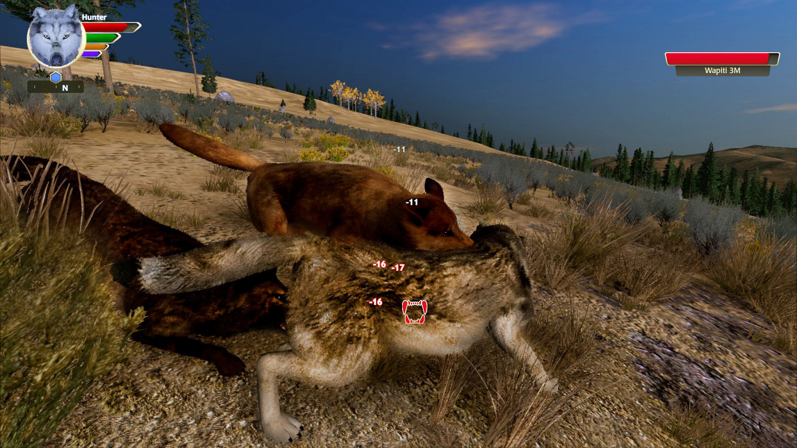

WolfQuest's sound analysis by Eduweb: the Roles of Sounds and Images in the Game
In this site I want to explore the use of audio in Eduweb's WolfQuest; Pay careful attention to
the loading music, and what emotions it evokes within yourself.:
To me, the loading audio evokes a sense of adventure, and
excitement readying myself to embark on an adventure.
Compared to the black and white color scheme and the strange, other-worldly appearance that LIMBO
portrayed, WolfQuest's vibrant and life-like graphics used to simulate the natural environment of a wolf
does not align with German Expressionism.
In my humble opinion, WolfQuest still carries the expression of emotion that is portrayed in German Expressionism
because of the emphasis and careful detail used to craft the art within the game.:
 width="320" height="240">
Situations like the one above are common, 'Rival' pack wolves will commonly trespass onto your
wolve's territory seeking to take it over, and even sometimes kill off your bloodline.
Be very cautious during scenes like this, commonly the audio will alert the player to the arrival.
(note 1): Anzieu, Didier The SKin Ego translated by Chris Turner (New Haven: Yale University
Press, 1989).
(note 2): Gotthardt, Alexxa "The German Expressionists' Shockingly Raw Work Exploded
Bourgeois Values and Reinvented Art."
(note 3): Freud, Sigmund "Beyond the Pleasure Principle" in The Standard
Edition translated by James Strachey (London: The Hogarth Press, 1957).
(article on German Expressionism accessed December 21, 2023).